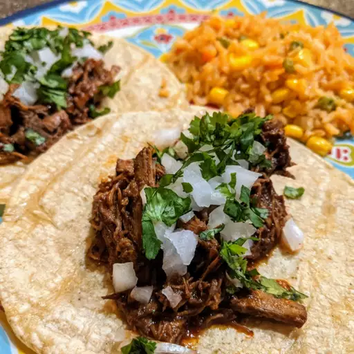

Birria de Res Tacos (Beef Birria Tacos)

Description
Mexican birria tacos, Jalisco-style, made with braised beef that's slow-cooked in
a fragrant 3-chile sauce with a delicious spice mix. Crispy tacos, and tender,
mouth-watering beef team up with melted Mexican cheese in this impressive
meal. This recipe takes a little time but it's so worth it!
Ingredients
- Dried chile peppers: The flavorful birria starts with dried guajillo chile
peppers, chile de arbol peppers, and ancho chiles. For a bit of extra heat,
don't remove all the seeds.
- Beef: Beef chuck roast is perfect for braising for hours. When you're done,
the meat will shred incredibly easily.
- Seasonings: You'll need salt, pepper, fresh garlic, whole cloves, cinnamon,
cumin, thyme, marjoram, and oregano.
- Olive oil: Sear the meat in olive oil before you add the braising liquid.
- Tomatoes: Grill Roma tomatoes before blending them with other
ingredients to unlock extra layers of flavor.
- Vinegar: Two tablespoons of white vinegar adds even more acidity to the
braising liquid.
- Tortillas: Use store-bought or homemade corn tortillas.
- Onion and cilantro: Finish each taco with chopped onion and fresh cilantro
for a final punch of flavor and texture.
Steps
- Boil the dried peppers for 5 minutes, then remove from heat and let the
peppers soak until the water is cool. Drain, reserving some water.
- Season the beef and sear on all sides in oil in a Dutch oven.
- Grill the tomatoes until the skin is blistered and begins to peel.
- Blend the soaked chili peppers with the reserved chile water, tomatoes,
vinegar, and seasonings.
- Strain the sauce and pour over the meat. Cover the Dutch oven and cook
until the meat begins to fall apart, basting often. Allow the meat to rest,
then shred.
- Warm the tortillas on the griddle. Fill each tortilla with meat, onions, and
cilantro.